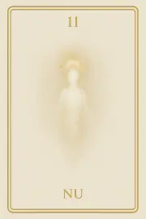
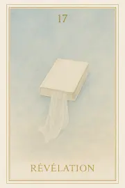
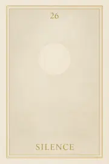
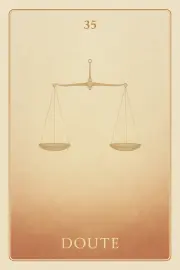
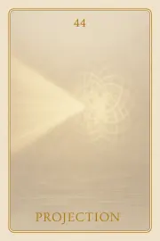
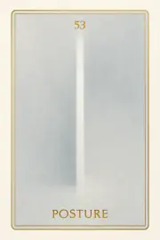
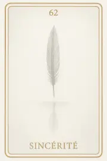
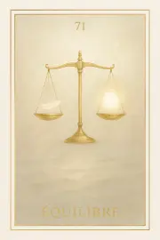
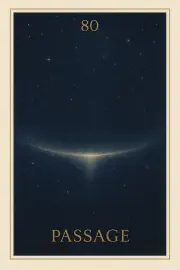

Famille 8 – Maât (Uranus)
Famille 8 – Uranus & Maât : Le jugement intérieur et l’harmonie vibratoire Cette famille explore les dynamiques de justesse, de discernement et de vérité intérieure. À travers Maât, l’âme est invitée à se mesurer à la balance du réel, non pas pour être condamnée, mais pour retrouver l’alignement avec sa propre fréquence. Uranus révèle les structures invisibles, les lois vibratoires qui soutiennent ou désajustent l’être. C’est ici que l’âme apprend à se reconnaître dans ce qu’elle vibre, et non dans ce qu’elle croit.
Carte 8 – Nu
Mots-clés : vérité intérieure, regard sur soi, lâcher les masques, révélation de l’âme, introspection profonde
Chiffre caché : 98
Lecture inversée : 8 → 9
Divinité principale : Maât
Planète secondaire : Soleil
Divinité secondaire : Râ
Interprétation de la carte 8 : Nu (droite)
Lecture intuitive rapide
L’âme est mise à nu devant la Loi. Elle n’a plus rien à prouver, elle ne peut ni fuir, ni expliquer, ni corriger. Elle se tient en silence dans un espace où tout ce qu’elle est devient visiblement vibratoire. Ce n’est ni un jugement, ni une mise à mort : c’est une exposition cosmique de la vérité nue. Maât ne parle pas, elle voit.
1. Caractère de la personne
L’âme est complètement exposée à elle-même, sans masque, sans protection. Elle se sent transparente, et incapable de tricher.
2. Plan affectif
L’âme ne ressent plus d’émotion liée à ses attachements : ils n’existent plus dans cet espace. Il ne reste que la vibration nue de ce qu’elle a été.
5. Plan spirituel
Spirituellement, NU est l’état avant la pesée. Maât observe, Uranus révèle la structure vibratoire de l’âme. Tout est là. Rien ne peut être effacé.
Carte 8 : Nu (inversée)
1. Caractère de la personne
L’âme cherche encore à se cacher. Elle rejette le regard cosmique, refuse de se voir entièrement.
2. Plan affectif
L’âme tente de raviver des liens ou de se défendre émotionnellement, alors que ce plan est déjà dépassé.
5. Plan spirituel
NU inversé indique un refus de la vérité vibratoire. L’âme persiste dans le voile, et repousse l’instant de se reconnaître sans fard.
Résumé de la carte 8 : Nu
NU est la vérité totale, non morale, non affective, mais vibratoire. L’âme est vue telle qu’elle est, dans sa structure, son rayonnement, sa densité.
À l’endroit, elle s’abandonne au regard de la Loi.
À l’envers, elle refuse encore de se voir nue.
Carte 17 – Révélation
Mots-clés : : révélation intérieure, lumière de vérité, face à soi-même, se voir en vérité, transparence de l’âme
Chiffre caché : 89
Lecture inversée : 9 → 8
Divinité principale : Maât
Planète secondaire : Terre
Divinité secondaire : Geb
Interprétation de la carte 17 : Révélation (droite)
Lecture intuitive rapide
L’âme se tient nue dans la lumière de Maât. Elle ne peut rien cacher, rien expliquer, rien retenir. Ce qu’elle a été, vécu, voulu, omis ou trahi, se manifeste ici sans effort. Elle ne parle pas : elle est. Et dans cet être, tout est déjà révélé. Maât est silence. Mais ce silence est vérité. L’âme sait qu’elle ne pourra pas tricher. C’est le moment juste avant la question.
1. Caractère de la personne
L’âme se tient sans masque. Ce qu’elle a été se montre, sans qu’elle ait besoin d’y penser.
2. Plan affectif
Rien ne la protège, mais rien ne l’accuse. L’âme ressent l’amour froid et juste de la loi divine.
5. Plan spirituel
Tout est révélé dans la lumière de Maât. Il ne reste que l’alignement, ou la dissonance.
Carte 17 : Révélation (inversée)
1. Caractère de la personne
L’âme tente encore de se cacher, mais tout transparaît. Elle vit une tension entre vérité et refus.
2. Plan affectif
L’âme se sent mise à nu sans y être prête. Elle redoute d’être vue entièrement.
5. Plan spirituel
L’âme résiste à la lumière de Maât, et retarde le moment de se reconnaître.
Résumé de la carte 17 : Révélation
RÉVÉLATION est le moment où l’âme ne peut plus rien cacher. Elle n’est pas encore interrogée, mais déjà entièrement visible. Maât ne parle pas, mais son silence pèse comme une vérité sans retour.
À l’endroit, l’âme accepte d’être révélée.
À l’envers, elle tente encore de fuir l’exposition.
Carte 26 – Silence
Mots-clés : : silence intérieur, vérité sans mot, absence de réponse, écouter l’âme, face au silence
Chiffre caché : 107
Lecture inversée : 7 → 0 → 1
Divinité principale : Maât
Planète secondaire : Jupiter
Divinité secondaire : Amon-Rê
Interprétation de la carte 26 : Silence (droite)
Lecture intuitive rapide
Tout vient d’être révélé. Il n’y a plus rien à dire. L’âme reste face à ce qu’elle a vu. Elle ne comprend pas encore. Elle cherche peut-être une explication, mais Maât ne parle pas. Et ce silence est plus lourd que le jugement. Il ne condamne pas. Il contient tout : la lumière, l’ombre, la vérité. L’âme est seule, mais tout est là, dans cette suspension vibrante, où rien ne répond, mais tout résonne.
1. Caractère de la personne
L’âme reste dans le silence. Elle accepte de ne pas comprendre tout de suite.
2. Plan affectif
L’âme ne se défend pas. Elle ressent l’absence de réponse comme un appel intérieur.
5. Plan spirituel
La vérité est là, nue. Maât ne dit rien, mais elle est présence.
Carte 26 : Silence (inversée)
1. Caractère de la personne
L’âme refuse le silence. Elle veut une justification, un mot pour éviter ce qu’elle ressent.
2. Plan affectif
L’âme ressent l’absence comme une blessure. Elle croit être abandonnée.
5. Plan spirituel
L’âme cherche une parole extérieure. Elle n’écoute pas encore le poids vibratoire de ce qui est.
Résumé de la carte 26 : Silence
SILENCE est le moment où tout a été révélé, et où plus rien ne parle. Ce n’est pas l’absence. C’est la présence pleine et nue de la vérité.
À l’endroit, l’âme écoute.
À l’envers, elle cherche à fuir ce qui ne dit rien.
Carte 35 – Doute
Mots-clés : : doute intérieur, remise en question, équilibre émotionnel, tension vibratoire, réajustement personnel
Chiffre caché : 116
Lecture inversée : 6 → 1 → 1
Divinité principale : Maât
Planète secondaire : Mars
Divinité secondaire : Sekhmet
Interprétation de la carte 35 : Doute (droite)
Lecture intuitive rapide
L’âme a vu. Elle a reçu la révélation. Puis elle s’est tenue dans le silence. Et maintenant… quelque chose vacille. Ce n’est pas une erreur, ni une confusion. C’est un point intérieur qui demande vérification. Un frémissement. Un désalignement subtil, une hésitation vibratoire. L’âme ne doute pas par faiblesse, mais parce qu’elle sent que tout n’est pas juste encore. Peut-être a-t-elle voulu trop bien faire. Peut-être a-t-elle posé un poids sur un autre. Peut-être s’est-elle jugée trop vite, ou pas assez. Maât n’exige pas la perfection, elle exige la vérité exacte. Et si l’âme rejette ce doute, Sekhmet s’enflamme. Car le déséquilibre nié devient mensonge actif.
1. Caractère de la personne
L’âme ressent un déséquilibre subtil. Elle accepte de revoir ce qu’elle croyait certain.
2. Plan affectif
L’âme perçoit une tension non dite dans ses liens. Elle cherche à comprendre sans accuser.
5. Plan spirituel
L’âme entre dans un doute sain. Elle reconnaît que la justesse demande réajustement.
Carte 35 : Doute (inversée)
1. Caractère de la personne
L’âme nie le doute. Elle s’accroche à sa vérité sans l’examiner.
2. Plan affectif
L’âme accuse où se dénigre. Le doute devient poison dans le lien.
5. Plan spirituel
L’âme refuse le questionnement. Sekhmet s’éveille, car le mensonge vibratoire déséquilibre la balance.
Résumé de la carte 35 : Doute
DOUTE est le moment où l’âme, après la révélation et le silence, remet en question la justesse de sa vibration. C’est une bascule intérieure.
À l’endroit, elle accepte de revoir.
À l’envers, elle nie — et le déséquilibre s’amplifie.
Carte 44 – Projection
Mots-clés : : projection mentale, perception erronée, image de soi, illusion relationnelle, pensée inconsciente
Chiffre caché : 125
Lecture inversée : 5 → 2 → 1
Divinité principale : Maât
Planète secondaire : Mercure
Divinité secondaire : Thot
Interprétation de la carte 44 : Projection (droite)
Lecture intuitive rapide
L’âme voit une image. Mais cette image ne vient pas de Maât. Elle vient d’elle-même. C’est une pensée, une forme, une conviction légère. Et cette forme agit déjà dans l’espace subtil. Elle ne l’a pas dite. Elle ne l’a même pas formulée. Mais elle l’a projetée. Ce n’est pas grave. Ce n’est pas un mensonge. Mais c’est un décalage. Et Maât n’ajuste pas le réel à la pensée. Elle pèse ce qui est. Pas ce que l’âme voudrait croire. Thot regarde la vibration exacte de cette projection. Et l’âme, elle, comprend que toute pensée devient acte, que toute forme subtile a une portée réelle. Il ne s’agit pas d’être parfait. Il s’agit de voir ce qui se déforme encore, même sans intention.
1. Caractère de la personne
L’âme observe ce qu’elle projette inconsciemment. Elle ajuste sa parole intérieure.
2. Plan affectif
L’âme voit les formes qu’elle a posées sur l’autre. Elle revient à une vision neutre.
5. Plan spirituel
L’âme comprend que toute pensée porte un acte. Elle choisit la clarté vibratoire.
Carte 44 : Projection (inversée)
1. Caractère de la personne
L’âme ne distingue pas ses croyances de la réalité. Elle agit depuis une projection.
2. Plan affectif
L’âme reste prise dans une image mentale de l’autre. Le lien devient illusion.
5. Plan spirituel
L’âme parle depuis une forme non alignée. Elle croit voir, mais fabrique ce qu’elle perçoit.
Résumé de la carte 44 : Projection
PROJECTION est le moment où l’âme voit ce qu’elle crée subtilement, dans sa pensée, son regard, son besoin.
À l’endroit, elle ajuste.
À l’envers, elle confond sa vision et le réel.
Carte 53 – Posture
Mots-clés : : posture rigide, vérité intérieure, forme versus fond, protection émotionnelle, alignement personnel
Chiffre caché : 134
Lecture inversée : 4 → 3 → 1
Divinité principale : Maât
Planète secondaire : Vénus
Divinité secondaire : Hathor
Interprétation de la carte 53 : Posture (droite)
Lecture intuitive rapide
L’âme regarde la forme qu’elle a tenue. Ce qu’elle a cru être juste. Ce qu’elle a tenu fermement. Elle voit maintenant que cette posture était plus rigide que vraie. Elle croyait s’aligner. Mais elle cherchait à ne pas tomber. Uranus lui montre la forme mentale, Maât la distance subtile entre la vérité et ce qui en donne l’air. Hathor la ramène au ressenti réel. Elle comprend que la posture n’est pas l’alignement. Et que parfois, ce qu’on croit juste, ne vibre plus.
1. Caractère de la personne
L’âme reconnaît la forme rigide qu’elle a tenue. Elle distingue le fond de la façade.
2. Plan affectif
L’âme voit qu’elle s’est tenue droite, mais fermée. Elle commence à assouplir le lien.
5. Plan spirituel
L’âme comprend que la posture n’est pas la vérité. Elle revient à l’alignement réel.
Carte 53 : Posture (inversée)
1. Caractère de la personne
L’âme confond posture et intégrité. Elle se protège derrière une forme figée.
2. Plan affectif
L’âme croit garder sa dignité, mais elle maintient une distance affective.
5. Plan spirituel
L’âme s’accroche à une vision dure du juste. Elle perd le souffle de la vérité.
Résumé de la carte 53 : Posture
POSTURE est le moment où l’âme voit la forme qu’elle a tenue. Elle distingue la vérité de sa représentation.
À l’endroit, elle relâche.
À l’envers, elle s’y enferme.
Carte 62 – Sincérité
Mots-clés : : sincérité de l’âme, vérité personnelle, introspection spirituelle, justesse intérieure, alignement sincère
Chiffre caché : 143
Lecture inversée : 3 → 4 → 1
Divinité principale : Maât
Planète secondaire : Saturne
Divinité secondaire : Osiris
Interprétation de la carte 62 : Sincérité (droite)
Lecture intuitive rapide
L’âme ne peut plus revenir en arrière. Elle regarde tout ce qu’elle a fait, à elle-même, et aux autres. Ce n’est pas un jugement. C’est un écho lucide, un regard sans fuite. A-t-elle été sincère ? Dans ses élans, ses gestes, ses mots, ses silences ? A-t-elle avancé en vérité, ou s’est-elle raconté une histoire ? Maât n’est pas encore là. Mais l’âme s’y prépare. Et Osiris, en silence, l’accompagne dans ce regard final.
1. Caractère de la personne
L’âme reconnaît ce qu’elle a dit, fait, tenu. Elle sait ce qui était sincère, et ce qui ne l’était pas.
2. Plan affectif
L’âme sent si elle a aimé en vérité. Elle accepte ce qu’elle n’a pas su dire.
5. Plan spirituel
L’âme revient à l’essentiel. Elle ne cherche plus à paraître, seulement à être juste.
Carte 62 : Sincérité (inversée)
1. Caractère de la personne
L’âme s’est raconté une histoire. Elle a cru à une image d’elle-même.
2. Plan affectif
L’âme a tenu un lien sans cœur. Elle a cru donner sans se regarder.
5. Plan spirituel
L’âme a confondu justesse et rôle. Elle n’a pas habité ce qu’elle disait servir.
Résumé de la carte 62 : Sincérité
SINCÉRITÉ est le moment où l’âme regarde tout ce qu’elle a posé, donné, retenu.
À l’endroit, elle reconnaît ce qui vibrait vrai.
À l’envers, elle voit ce qu’elle a joué sans l’incarner.
Carte 71 – Equilibre
Mots-clés : : équilibre intérieur, pesée de l’âme, bilan spirituel, cœur juste
Chiffre caché : 152
Lecture inversée : 2 → 5 → 1
Divinité principale : Maât
Planète secondaire : Uranus
Divinité secondaire : Maât
Interprétation de la carte 71 : Equilibre (droite)
Lecture intuitive rapide
L’âme ne dépose plus. Elle est dans la balance. Face à elle, la plume de Maât. Aucune parole ne peut intervenir. Aucun souvenir ne peut justifier. Aucune intention ne peut corriger ce qui fut. La balance ne juge pas. Elle dit. Uranus, doublement présent, révèle la cohérence absolue entre l’être et le monde. Ce que l’âme a été est ce qu’elle est. Maât n’attend rien. Elle écoute le poids du cœur. La plume est légèrement plus haute. C’est un signe. Un signe que la vérité a été honorée, même dans l’imperfection. L’équilibre est atteint.
1. Caractère de la personne
L’âme a trouvé sa justesse. Son cœur est aligné avec ce qu’elle a été.
2. Plan affectif
L’âme a aimé sans se trahir. Sa vibration a respecté la vérité de l’autre.
5. Plan spirituel
L’âme atteint l’équilibre. La Loi reconnaît son chemin.
Carte 71 : Equilibre (inversée)
1. Caractère de la personne
L’âme voit le déséquilibre en elle. Elle n’a pas incarné sa propre vérité.
2. Plan affectif
L’âme a aimé en s’oubliant, ou en niant l’autre. La balance révèle le désajustement.
5. Plan spirituel
L’âme n’est pas encore en paix avec elle-même. La pesée montre ce qu’il reste à traverser.
Résumé de la carte 71 : Equilibre
ÉQUILIBRE est la carte de la pesée réelle.
À l’endroit, l’âme est reconnue dans sa justesse.
À l’envers, elle découvre que l’équilibre n’est pas encore atteint.
Carte 80 – Passage
Mots-clés : : passage de l’âme, seuil spirituel, fusion vibratoire, vérité essentielle, fin de cycle
Chiffre caché : 160
Lecture inversée : 0 → 6 → 1
Divinité principale : Maât
Planète secondaire : Planète inconnue
Divinité secondaire : Sia
Interprétation de la carte 80 : Passage (droite)
Lecture intuitive rapide
L’âme a tout traversé. Elle a vu ses colères, ses liens, ses dons, ses ombres. Elle a reconnu ses échos, ses limites, ses ouvertures. Et maintenant, Maât regarde. Ce n’est plus l’âme qui dépose, ni qui décide. C’est l’équilibre profond qui parle pour elle. Si tout est aligné, la porte s’ouvre. Elle fusionne dans le Tout. Elle retourne à l’Origine. Mais si une seule vibration essentielle reste faussée, le passage se referme. Et l’âme est doucement redirigée vers une nouvelle boucle. Il ne s’agit pas de bien ou mal, mais de justesse vibratoire. Le PASSAGE n’est ni récompense, ni sanction. C’est une vérité nue, un seuil que seule la légèreté essentielle permet de franchir.
1. Caractère de la personne
L’âme est alignée avec sa vérité. Elle n’a plus de masque, plus de tension.
2. Plan affectif
L’âme a tout donné sans attente. Rien ne pèse sur son cœur.
5. Plan spirituel
L’âme franchit le dernier seuil. Le passage s’ouvre. La fusion est possible.
Carte 80 : Passage (inversée)
1. Caractère de la personne
Un dernier masque subsiste. L’âme n’est pas encore pleinement nue.
2. Plan affectif
Il reste une vibration d’attente ou de blessure. Le passage est différé, l’âme ne peux passer
5. Plan spirituel
L’équilibre n’est pas encore parfait. L’âme reviendra réajuster ce qu’elle croyait terminer.
Résumé de la carte 80 : Passage
PASSAGE est le seuil ultime de l’âme.
À l’endroit, elle est en accord avec sa vibration pure et peut fusionner.
À l’envers, un déséquilibre la ramène à une boucle nécessaire.